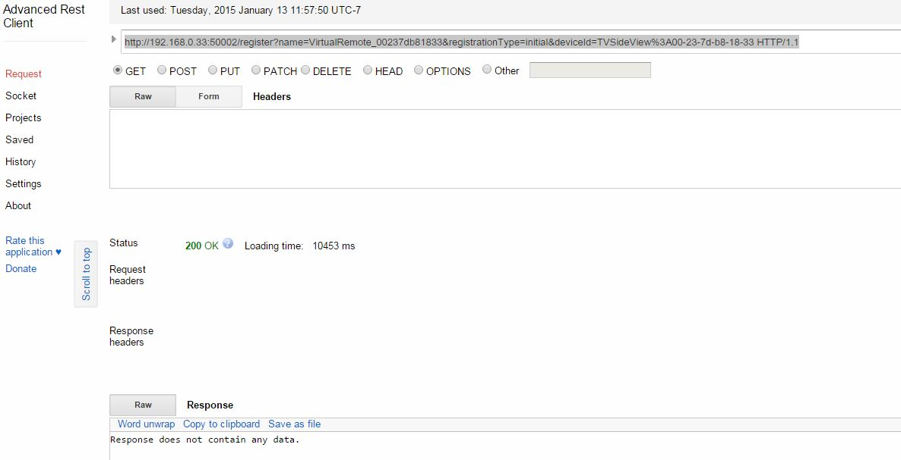
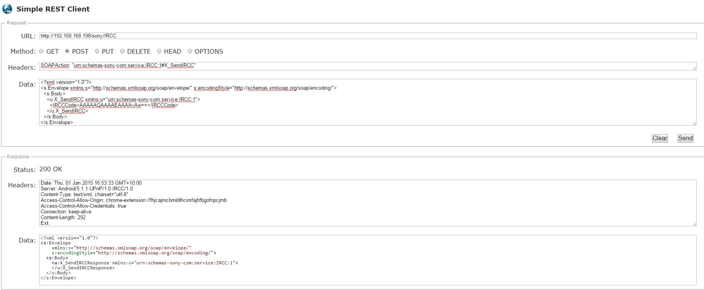

I'm a bit of a newbie with OR and have just figured out how to send HTTP commands to my Sony TV. I didn't see anything yet in the forums so I thought I would post it here as a reference for anyone else who would like to set this up. I have a KDL-55W900A and can't confirm this works on any pre-2013 Sony TVs. I know for a fact that only 2013 models and newer support wake on LAN for power on so if you have a pre-2013 TV you still need to power on through CEC or IR.
For power on you simply need to send a Wake-On-LAN command to the TV.
The rest of the commands are sent through HTTP POST to http://tv-ip-address/sony/IRCC?
Here are all the commands I have found so far. It would be nice to have discrete HDMI input commands, but haven't found them yet =(
Power Off
<?xml version="1.0" encoding="utf-8"?><s:Envelope xmlns:s="http://schemas.xmlsoap.org/soap/envelope/" s:encodingStyle="http://schemas.xmlsoap.org/soap/encoding/"><s:Body><u:X_SendIRCC xmlns:u="urn:schemas-sony-com:service:IRCC:1"><IRCCCode>AAAAAQAAAAEAAAAvAw==</IRCCCode></u:X_SendIRCC></s:Body></s:Envelope>
Volume Down
<?xml version="1.0" encoding="utf-8"?><s:Envelope xmlns:s="http://schemas.xmlsoap.org/soap/envelope/" s:encodingStyle="http://schemas.xmlsoap.org/soap/encoding/"><s:Body><u:X_SendIRCC xmlns:u="urn:schemas-sony-com:service:IRCC:1"><IRCCCode>AAAAAQAAAAEAAAATAw==</IRCCCode></u:X_SendIRCC></s:Body></s:Envelope>
Volume Up
<?xml version="1.0" encoding="utf-8"?><s:Envelope xmlns:s="http://schemas.xmlsoap.org/soap/envelope/" s:encodingStyle="http://schemas.xmlsoap.org/soap/encoding/"><s:Body><u:X_SendIRCC xmlns:u="urn:schemas-sony-com:service:IRCC:1"><IRCCCode>AAAAAQAAAAEAAAASAw==</IRCCCode></u:X_SendIRCC></s:Body></s:Envelope>
Mute Toggle
<?xml version="1.0" encoding="utf-8"?><s:Envelope xmlns:s="http://schemas.xmlsoap.org/soap/envelope/" s:encodingStyle="http://schemas.xmlsoap.org/soap/encoding/"><s:Body><u:X_SendIRCC xmlns:u="urn:schemas-sony-com:service:IRCC:1"><IRCCCode>AAAAAQAAAAEAAAAUAw==</IRCCCode></u:X_SendIRCC></s:Body></s:Envelope>
Channel Down
<?xml version="1.0" encoding="utf-8"?><s:Envelope xmlns:s="http://schemas.xmlsoap.org/soap/envelope/" s:encodingStyle="http://schemas.xmlsoap.org/soap/encoding/"><s:Body><u:X_SendIRCC xmlns:u="urn:schemas-sony-com:service:IRCC:1"><IRCCCode>AAAAAQAAAAEAAAARAw==</IRCCCode></u:X_SendIRCC></s:Body></s:Envelope>
Channel Up
<?xml version="1.0" encoding="utf-8"?><s:Envelope xmlns:s="http://schemas.xmlsoap.org/soap/envelope/" s:encodingStyle="http://schemas.xmlsoap.org/soap/encoding/"><s:Body><u:X_SendIRCC xmlns:u="urn:schemas-sony-com:service:IRCC:1"><IRCCCode>AAAAAQAAAAEAAAAQAw==</IRCCCode></u:X_SendIRCC></s:Body></s:Envelope>
Cursor Down
<?xml version="1.0" encoding="utf-8"?><s:Envelope xmlns:s="http://schemas.xmlsoap.org/soap/envelope/" s:encodingStyle="http://schemas.xmlsoap.org/soap/encoding/"><s:Body><u:X_SendIRCC xmlns:u="urn:schemas-sony-com:service:IRCC:1"><IRCCCode>AAAAAQAAAAEAAAB1Aw==</IRCCCode></u:X_SendIRCC></s:Body></s:Envelope>
Cursor Up
<?xml version="1.0" encoding="utf-8"?><s:Envelope xmlns:s="http://schemas.xmlsoap.org/soap/envelope/" s:encodingStyle="http://schemas.xmlsoap.org/soap/encoding/"><s:Body><u:X_SendIRCC xmlns:u="urn:schemas-sony-com:service:IRCC:1"><IRCCCode>AAAAAQAAAAEAAAB0Aw==</IRCCCode></u:X_SendIRCC></s:Body></s:Envelope>
Cursor Right
<?xml version="1.0" encoding="utf-8"?><s:Envelope xmlns:s="http://schemas.xmlsoap.org/soap/envelope/" s:encodingStyle="http://schemas.xmlsoap.org/soap/encoding/"><s:Body><u:X_SendIRCC xmlns:u="urn:schemas-sony-com:service:IRCC:1"><IRCCCode>AAAAAQAAAAEAAAAzAw==</IRCCCode></u:X_SendIRCC></s:Body></s:Envelope>
Cursor Left
<?xml version="1.0" encoding="utf-8"?><s:Envelope xmlns:s="http://schemas.xmlsoap.org/soap/envelope/" s:encodingStyle="http://schemas.xmlsoap.org/soap/encoding/"><s:Body><u:X_SendIRCC xmlns:u="urn:schemas-sony-com:service:IRCC:1"><IRCCCode>AAAAAQAAAAEAAAA0Aw==</IRCCCode></u:X_SendIRCC></s:Body></s:Envelope>
Cursor Enter
<?xml version="1.0" encoding="utf-8"?><s:Envelope xmlns:s="http://schemas.xmlsoap.org/soap/envelope/" s:encodingStyle="http://schemas.xmlsoap.org/soap/encoding/"><s:Body><u:X_SendIRCC xmlns:u="urn:schemas-sony-com:service:IRCC:1"><IRCCCode>AAAAAQAAAAEAAABlAw==</IRCCCode></u:X_SendIRCC></s:Body></s:Envelope>
Menu Home
<?xml version="1.0" encoding="utf-8"?><s:Envelope xmlns:s="http://schemas.xmlsoap.org/soap/envelope/" s:encodingStyle="http://schemas.xmlsoap.org/soap/encoding/"><s:Body><u:X_SendIRCC xmlns:u="urn:schemas-sony-com:service:IRCC:1"><IRCCCode>AAAAAQAAAAEAAABgAw==</IRCCCode></u:X_SendIRCC></s:Body></s:Envelope>
Exit
<?xml version="1.0" encoding="utf-8"?><s:Envelope xmlns:s="http://schemas.xmlsoap.org/soap/envelope/" s:encodingStyle="http://schemas.xmlsoap.org/soap/encoding/"><s:Body><u:X_SendIRCC xmlns:u="urn:schemas-sony-com:service:IRCC:1"><IRCCCode>AAAAAQAAAAEAAABjAw==</IRCCCode></u:X_SendIRCC></s:Body></s:Envelope>
Return
<?xml version="1.0" encoding="utf-8"?><s:Envelope xmlns:s="http://schemas.xmlsoap.org/soap/envelope/" s:encodingStyle="http://schemas.xmlsoap.org/soap/encoding/"><s:Body><u:X_SendIRCC xmlns:u="urn:schemas-sony-com:service:IRCC:1"><IRCCCode>AAAAAgAAAJcAAAAjAw==</IRCCCode></u:X_SendIRCC></s:Body></s:Envelope>
Display
<?xml version="1.0" encoding="utf-8"?><s:Envelope xmlns:s="http://schemas.xmlsoap.org/soap/envelope/" s:encodingStyle="http://schemas.xmlsoap.org/soap/encoding/"><s:Body><u:X_SendIRCC xmlns:u="urn:schemas-sony-com:service:IRCC:1"><IRCCCode>AAAAAQAAAAEAAAA6Aw==</IRCCCode></u:X_SendIRCC></s:Body></s:Envelope>
Guide
<?xml version="1.0" encoding="utf-8"?><s:Envelope xmlns:s="http://schemas.xmlsoap.org/soap/envelope/" s:encodingStyle="http://schemas.xmlsoap.org/soap/encoding/"><s:Body><u:X_SendIRCC xmlns:u="urn:schemas-sony-com:service:IRCC:1"><IRCCCode>AAAAAgAAAKQAAABbAw==</IRCCCode></u:X_SendIRCC></s:Body></s:Envelope>
0
<?xml version="1.0" encoding="utf-8"?><s:Envelope xmlns:s="http://schemas.xmlsoap.org/soap/envelope/" s:encodingStyle="http://schemas.xmlsoap.org/soap/encoding/"><s:Body><u:X_SendIRCC xmlns:u="urn:schemas-sony-com:service:IRCC:1"><IRCCCode>AAAAAQAAAAEAAAAJAw==</IRCCCode></u:X_SendIRCC></s:Body></s:Envelope>
1
<?xml version="1.0" encoding="utf-8"?><s:Envelope xmlns:s="http://schemas.xmlsoap.org/soap/envelope/" s:encodingStyle="http://schemas.xmlsoap.org/soap/encoding/"><s:Body><u:X_SendIRCC xmlns:u="urn:schemas-sony-com:service:IRCC:1"><IRCCCode>AAAAAQAAAAEAAAAAAw==</IRCCCode></u:X_SendIRCC></s:Body></s:Envelope>
2
<?xml version="1.0" encoding="utf-8"?><s:Envelope xmlns:s="http://schemas.xmlsoap.org/soap/envelope/" s:encodingStyle="http://schemas.xmlsoap.org/soap/encoding/"><s:Body><u:X_SendIRCC xmlns:u="urn:schemas-sony-com:service:IRCC:1"><IRCCCode>AAAAAQAAAAEAAAABAw==</IRCCCode></u:X_SendIRCC></s:Body></s:Envelope>
3
<?xml version="1.0" encoding="utf-8"?><s:Envelope xmlns:s="http://schemas.xmlsoap.org/soap/envelope/" s:encodingStyle="http://schemas.xmlsoap.org/soap/encoding/"><s:Body><u:X_SendIRCC xmlns:u="urn:schemas-sony-com:service:IRCC:1"><IRCCCode>AAAAAQAAAAEAAAACAw==</IRCCCode></u:X_SendIRCC></s:Body></s:Envelope>
4
<?xml version="1.0" encoding="utf-8"?><s:Envelope xmlns:s="http://schemas.xmlsoap.org/soap/envelope/" s:encodingStyle="http://schemas.xmlsoap.org/soap/encoding/"><s:Body><u:X_SendIRCC xmlns:u="urn:schemas-sony-com:service:IRCC:1"><IRCCCode>AAAAAQAAAAEAAAADAw==</IRCCCode></u:X_SendIRCC></s:Body></s:Envelope>
5
<?xml version="1.0" encoding="utf-8"?><s:Envelope xmlns:s="http://schemas.xmlsoap.org/soap/envelope/" s:encodingStyle="http://schemas.xmlsoap.org/soap/encoding/"><s:Body><u:X_SendIRCC xmlns:u="urn:schemas-sony-com:service:IRCC:1"><IRCCCode>AAAAAQAAAAEAAAAEAw==</IRCCCode></u:X_SendIRCC></s:Body></s:Envelope>
6
<?xml version="1.0" encoding="utf-8"?><s:Envelope xmlns:s="http://schemas.xmlsoap.org/soap/envelope/" s:encodingStyle="http://schemas.xmlsoap.org/soap/encoding/"><s:Body><u:X_SendIRCC xmlns:u="urn:schemas-sony-com:service:IRCC:1"><IRCCCode>AAAAAQAAAAEAAAAFAw==</IRCCCode></u:X_SendIRCC></s:Body></s:Envelope>
7
<?xml version="1.0" encoding="utf-8"?><s:Envelope xmlns:s="http://schemas.xmlsoap.org/soap/envelope/" s:encodingStyle="http://schemas.xmlsoap.org/soap/encoding/"><s:Body><u:X_SendIRCC xmlns:u="urn:schemas-sony-com:service:IRCC:1"><IRCCCode>AAAAAQAAAAEAAAAGAw==</IRCCCode></u:X_SendIRCC></s:Body></s:Envelope>
8
<?xml version="1.0" encoding="utf-8"?><s:Envelope xmlns:s="http://schemas.xmlsoap.org/soap/envelope/" s:encodingStyle="http://schemas.xmlsoap.org/soap/encoding/"><s:Body><u:X_SendIRCC xmlns:u="urn:schemas-sony-com:service:IRCC:1"><IRCCCode>AAAAAQAAAAEAAAAHAw==</IRCCCode></u:X_SendIRCC></s:Body></s:Envelope>
9
<?xml version="1.0" encoding="utf-8"?><s:Envelope xmlns:s="http://schemas.xmlsoap.org/soap/envelope/" s:encodingStyle="http://schemas.xmlsoap.org/soap/encoding/"><s:Body><u:X_SendIRCC xmlns:u="urn:schemas-sony-com:service:IRCC:1"><IRCCCode>AAAAAQAAAAEAAAAIAw==</IRCCCode></u:X_SendIRCC></s:Body></s:Envelope>
10
<?xml version="1.0" encoding="utf-8"?><s:Envelope xmlns:s="http://schemas.xmlsoap.org/soap/envelope/" s:encodingStyle="http://schemas.xmlsoap.org/soap/encoding/"><s:Body><u:X_SendIRCC xmlns:u="urn:schemas-sony-com:service:IRCC:1"><IRCCCode>AAAAAgAAAJcAAAAMAw==</IRCCCode></u:X_SendIRCC></s:Body></s:Envelope>
Digit Separator
<?xml version="1.0" encoding="utf-8"?><s:Envelope xmlns:s="http://schemas.xmlsoap.org/soap/envelope/" s:encodingStyle="http://schemas.xmlsoap.org/soap/encoding/"><s:Body><u:X_SendIRCC xmlns:u="urn:schemas-sony-com:service:IRCC:1"><IRCCCode>AAAAAgAAAJcAAAAdAw==</IRCCCode></u:X_SendIRCC></s:Body></s:Envelope>
Enter
<?xml version="1.0" encoding="utf-8"?><s:Envelope xmlns:s="http://schemas.xmlsoap.org/soap/envelope/" s:encodingStyle="http://schemas.xmlsoap.org/soap/encoding/"><s:Body><u:X_SendIRCC xmlns:u="urn:schemas-sony-com:service:IRCC:1"><IRCCCode>AAAAAQAAAAEAAABlAw/Aw==</IRCCCode></u:X_SendIRCC></s:Body></s:Envelope>
Menu Popup
<?xml version="1.0" encoding="utf-8"?><s:Envelope xmlns:s="http://schemas.xmlsoap.org/soap/envelope/" s:encodingStyle="http://schemas.xmlsoap.org/soap/encoding/"><s:Body><u:X_SendIRCC xmlns:u="urn:schemas-sony-com:service:IRCC:1"><IRCCCode>AAAAAgAAABoAAABhAw+Aw==</IRCCCode></u:X_SendIRCC></s:Body></s:Envelope>
Function Red
<?xml version="1.0" encoding="utf-8"?><s:Envelope xmlns:s="http://schemas.xmlsoap.org/soap/envelope/" s:encodingStyle="http://schemas.xmlsoap.org/soap/encoding/"><s:Body><u:X_SendIRCC xmlns:u="urn:schemas-sony-com:service:IRCC:1"><IRCCCode>AAAAAgAAAJcAAAAlAw==</IRCCCode></u:X_SendIRCC></s:Body></s:Envelope>
Function Yellow
<?xml version="1.0" encoding="utf-8"?><s:Envelope xmlns:s="http://schemas.xmlsoap.org/soap/envelope/" s:encodingStyle="http://schemas.xmlsoap.org/soap/encoding/"><s:Body><u:X_SendIRCC xmlns:u="urn:schemas-sony-com:service:IRCC:1"><IRCCCode>AAAAAgAAAJcAAAAnAw==</IRCCCode></u:X_SendIRCC></s:Body></s:Envelope>
Function Green
<?xml version="1.0" encoding="utf-8"?><s:Envelope xmlns:s="http://schemas.xmlsoap.org/soap/envelope/" s:encodingStyle="http://schemas.xmlsoap.org/soap/encoding/"><s:Body><u:X_SendIRCC xmlns:u="urn:schemas-sony-com:service:IRCC:1"><IRCCCode>AAAAAgAAAJcAAAAmAw==</IRCCCode></u:X_SendIRCC></s:Body></s:Envelope>
Function Blue
<?xml version="1.0" encoding="utf-8"?><s:Envelope xmlns:s="http://schemas.xmlsoap.org/soap/envelope/" s:encodingStyle="http://schemas.xmlsoap.org/soap/encoding/"><s:Body><u:X_SendIRCC xmlns:u="urn:schemas-sony-com:service:IRCC:1"><IRCCCode>AAAAAgAAAJcAAAAkAw==</IRCCCode></u:X_SendIRCC></s:Body></s:Envelope>
3d
<?xml version="1.0" encoding="utf-8"?><s:Envelope xmlns:s="http://schemas.xmlsoap.org/soap/envelope/" s:encodingStyle="http://schemas.xmlsoap.org/soap/encoding/"><s:Body><u:X_SendIRCC xmlns:u="urn:schemas-sony-com:service:IRCC:1"><IRCCCode>AAAAAgAAAHcAAABNAw==</IRCCCode></u:X_SendIRCC></s:Body></s:Envelope>
Subtitle
<?xml version="1.0" encoding="utf-8"?><s:Envelope xmlns:s="http://schemas.xmlsoap.org/soap/envelope/" s:encodingStyle="http://schemas.xmlsoap.org/soap/encoding/"><s:Body><u:X_SendIRCC xmlns:u="urn:schemas-sony-com:service:IRCC:1"><IRCCCode>AAAAAgAAAJcAAAAoAw==</IRCCCode></u:X_SendIRCC></s:Body></s:Envelope>
Previous Channel
<?xml version="1.0" encoding="utf-8"?><s:Envelope xmlns:s="http://schemas.xmlsoap.org/soap/envelope/" s:encodingStyle="http://schemas.xmlsoap.org/soap/encoding/"><s:Body><u:X_SendIRCC xmlns:u="urn:schemas-sony-com:service:IRCC:1"><IRCCCode>AAAAAQAAAAEAAAA7Aw==</IRCCCode></u:X_SendIRCC></s:Body></s:Envelope>
Help
<?xml version="1.0" encoding="utf-8"?><s:Envelope xmlns:s="http://schemas.xmlsoap.org/soap/envelope/" s:encodingStyle="http://schemas.xmlsoap.org/soap/encoding/"><s:Body><u:X_SendIRCC xmlns:u="urn:schemas-sony-com:service:IRCC:1"><IRCCCode>AAAAAgAAABoAAAB7Aw==</IRCCCode></u:X_SendIRCC></s:Body></s:Envelope>
Sync Menu
<?xml version="1.0" encoding="utf-8"?><s:Envelope xmlns:s="http://schemas.xmlsoap.org/soap/envelope/" s:encodingStyle="http://schemas.xmlsoap.org/soap/encoding/"><s:Body><u:X_SendIRCC xmlns:u="urn:schemas-sony-com:service:IRCC:1"><IRCCCode>AAAAAgAAABoAAABYAw==</IRCCCode></u:X_SendIRCC></s:Body></s:Envelope>
Options
<?xml version="1.0" encoding="utf-8"?><s:Envelope xmlns:s="http://schemas.xmlsoap.org/soap/envelope/" s:encodingStyle="http://schemas.xmlsoap.org/soap/encoding/"><s:Body><u:X_SendIRCC xmlns:u="urn:schemas-sony-com:service:IRCC:1"><IRCCCode>AAAAAgAAAJcAAAA2Aw==</IRCCCode></u:X_SendIRCC></s:Body></s:Envelope>
Input Toggle
<?xml version="1.0" encoding="utf-8"?><s:Envelope xmlns:s="http://schemas.xmlsoap.org/soap/envelope/" s:encodingStyle="http://schemas.xmlsoap.org/soap/encoding/"><s:Body><u:X_SendIRCC xmlns:u="urn:schemas-sony-com:service:IRCC:1"><IRCCCode>AAAAAQAAAAEAAAAlAw==</IRCCCode></u:X_SendIRCC></s:Body></s:Envelope>
Wide
<?xml version="1.0" encoding="utf-8"?><s:Envelope xmlns:s="http://schemas.xmlsoap.org/soap/envelope/" s:encodingStyle="http://schemas.xmlsoap.org/soap/encoding/"><s:Body><u:X_SendIRCC xmlns:u="urn:schemas-sony-com:service:IRCC:1"><IRCCCode>AAAAAgAAAKQAAAA9Aw==</IRCCCode></u:X_SendIRCC></s:Body></s:Envelope>
Sony Entertainment Network
<?xml version="1.0" encoding="utf-8"?><s:Envelope xmlns:s="http://schemas.xmlsoap.org/soap/envelope/" s:encodingStyle="http://schemas.xmlsoap.org/soap/encoding/"><s:Body><u:X_SendIRCC xmlns:u="urn:schemas-sony-com:service:IRCC:1"><IRCCCode>AAAAAgAAABoAAAB9Aw==</IRCCCode></u:X_SendIRCC></s:Body></s:Envelope>
Pause
<?xml version="1.0" encoding="utf-8"?><s:Envelope xmlns:s="http://schemas.xmlsoap.org/soap/envelope/" s:encodingStyle="http://schemas.xmlsoap.org/soap/encoding/"><s:Body><u:X_SendIRCC xmlns:u="urn:schemas-sony-com:service:IRCC:1"><IRCCCode>AAAAAgAAAJcAAAAZAw==</IRCCCode></u:X_SendIRCC></s:Body></s:Envelope>
Play
<?xml version="1.0" encoding="utf-8"?><s:Envelope xmlns:s="http://schemas.xmlsoap.org/soap/envelope/" s:encodingStyle="http://schemas.xmlsoap.org/soap/encoding/"><s:Body><u:X_SendIRCC xmlns:u="urn:schemas-sony-com:service:IRCC:1"><IRCCCode>AAAAAgAAAJcAAAAaAw==</IRCCCode></u:X_SendIRCC></s:Body></s:Envelope>
Stop
<?xml version="1.0" encoding="utf-8"?><s:Envelope xmlns:s="http://schemas.xmlsoap.org/soap/envelope/" s:encodingStyle="http://schemas.xmlsoap.org/soap/encoding/"><s:Body><u:X_SendIRCC xmlns:u="urn:schemas-sony-com:service:IRCC:1"><IRCCCode>AAAAAgAAAJcAAAAYAw==</IRCCCode></u:X_SendIRCC></s:Body></s:Envelope>
Forward
<?xml version="1.0" encoding="utf-8"?><s:Envelope xmlns:s="http://schemas.xmlsoap.org/soap/envelope/" s:encodingStyle="http://schemas.xmlsoap.org/soap/encoding/"><s:Body><u:X_SendIRCC xmlns:u="urn:schemas-sony-com:service:IRCC:1"><IRCCCode>AAAAAgAAAJcAAAAcAw==</IRCCCode></u:X_SendIRCC></s:Body></s:Envelope>
Reverse
<?xml version="1.0" encoding="utf-8"?><s:Envelope xmlns:s="http://schemas.xmlsoap.org/soap/envelope/" s:encodingStyle="http://schemas.xmlsoap.org/soap/encoding/"><s:Body><u:X_SendIRCC xmlns:u="urn:schemas-sony-com:service:IRCC:1"><IRCCCode>AAAAAgAAAJcAAAAbAw==</IRCCCode></u:X_SendIRCC></s:Body></s:Envelope>
Previous
<?xml version="1.0" encoding="utf-8"?><s:Envelope xmlns:s="http://schemas.xmlsoap.org/soap/envelope/" s:encodingStyle="http://schemas.xmlsoap.org/soap/encoding/"><s:Body><u:X_SendIRCC xmlns:u="urn:schemas-sony-com:service:IRCC:1"><IRCCCode>AAAAAgAAAJcAAAA8Aw==</IRCCCode></u:X_SendIRCC></s:Body></s:Envelope>
Next
<?xml version="1.0" encoding="utf-8"?><s:Envelope xmlns:s="http://schemas.xmlsoap.org/soap/envelope/" s:encodingStyle="http://schemas.xmlsoap.org/soap/encoding/"><s:Body><u:X_SendIRCC xmlns:u="urn:schemas-sony-com:service:IRCC:1"><IRCCCode>AAAAAgAAAJcAAAA9Aw==</IRCCCode></u:X_SendIRCC></s:Body></s:Envelope>
{kind=link}
{kind=link}
{kind=link}
{kind=link}
{kind=link}
{kind=link}
{kind=link}
{kind=link}
{kind=link}
{kind=link}
{kind=link}
{kind=link}
{kind=link}
|
Very useful post. I have also worked on this, but haven't had time to implement it on my OR installation. Though I think it would be more useful to get status of the TV so that it would be possible to use that info for scene control for lightning and shades etc. But I found this listing from Vladimir Shabunins work which includes those discrete HDMI commands. https://github.com/shabunin/cf-sonytv/blob/master/scripts/SonyTV.js 'Analog': 'AAAAAgAAAHcAAAANAw==', //not tested: |
|
Hi! I tried to execute the SOAP commands, but I get an "Action not authorized" reply. I have tried and succeded (probably) to register my device (computer) with my Sony BRAVIA, using the last command provided here: http://mendelonline.be/sony/sony.txt Have any of you experienced this so far? |
|
Did anyone have success in controlling their blu-ray via IP? |
|
Have you tried with method and commands posted above? For me they work just fine with OR. And at least my tv doesn't even require any authentication. You can test commands using Simple rest client plugin for chrome.. http://www.remotecentral.com/cgi-bin/forums/viewpost.cgi?1115499 there you can find commands for some sony bd-player.. |
|
What is your blu-ray model number? I haven't tried it these commands on sony's blu-ray players yet but I can try them in a few hours. |
|
I have the Sony BDPS3200. I have tried the commands below. Not sure if I am sending them the correct way though. I tried HTTP and TCP/IP. I used Wireshark on my main PC after setting up a chatty hub to log everything. I used my iPhone that is registered with the sony blu ray. Using HTTP, URL Field - POST http://192.168.0.32:52323/upnp/control/IRCC/<?xml version="1.0"?> <s:Envelope xmlns:s="http://schemas.xmlsoap.org/soap/envelope/" s:encodingStyle="http://schemas.xmlsoap.org/soap/encoding/"> <s:Body> <u:X_SendIRCC xmlns:u="urn:schemas-sony-com:service:IRCC:1"> <IRCCCode>AAAAAwAAHFoAAAAAAw==</IRCCCode> </u:X_SendIRCC> </s:Body> </s:Envelope> Using TCP/IP - IP ADDRESS - 192.168.0.32 |
|
The URL should be http://192.168.0.32/sony/IRCC? Set HTTP Method to POST And set the workload to <?xml version="1.0"?> <s:Envelope xmlns:s="http://schemas.xmlsoap.org/soap/envelope/" s:encodingStyle="http://schemas.xmlsoap.org/soap/encoding/"> <s:Body> <u:X_SendIRCC xmlns:u="urn:schemas-sony-com:service:IRCC:1"> <IRCCCode>AAAAAwAAHFoAAAAAAw==</IRCCCode> </u:X_SendIRCC> </s:Body> </s:Envelope> |
|
I appreciate the help but it unfortunately still isn't working.. I have verified the code is commonly known for power and double checked the IP. I have some other devices that work (DirecTV, GlobalCache) so I do not think it is a network issue or problem with my install. I also updated the URL to http://192.168.0.32:52323/sony/IRCC? (and tested 50001). Any other thoughts? |
|
I recommend testing with some other command also since power command is WOL packet in many cases. And also my TV doesn't require port number, so try without.. |
|
you were spot on on the WOL. I set up a magic packet for that (after wireshark confirmed the sony app was sending it). I am still struggling with the format of the commands. I am using a REST client from my PC to test. port 52323 seems to be correct. I am getting responses back. 415 Unsupported Media Type Show explanation Loading time: 10 |
|
Could you confirm that you have tried also port 80 or leave port number out of address...? I get similar response from my tv when using port 52323. |
|
I did a port scan and it isn't listening on port 80. I think the biggest issue is my ignorance on how to properly format the commands in the advanced REST client. I am not moron when it comes to IT stuff, but this is sure making me feel like one.. Completed Service scan at 14:25, 5.01s elapsed (6 services on 1 host) Nmap scan report for 192.168.0.33 PORT STATE SERVICE VERSION MAC Address: FC:F1:52:9D:62:27 (Sony) |
|
I have made some progress using the falconsoft Sony virtual remote. I can get it to attempt to register my computer. However I am presented with a windows username/password prompt, and the BluRay only provides a passkey. I am going to sniff the traffic and see if I can figure out any new info, but it is the first promising progress in a while now.. |
|
This is what is sent: GET /register?name=VirtualRemote_00237db81833®istrationType=initial&deviceId=TVSideView%3A00-23-7d-b8-18-33 HTTP/1.1 |
|
 Success!! I was able to register it to my computer! Here is the exact command for any interested. I used the Advanced REST plugin for Chrome. You can see what it should look like in the screen shot. |
|
And now I can send commands! POST /upnp/control/IRCC HTTP/1.1 <?xml version="1.0"?> <?xml version="1.0"?><s:Envelope xmlns:s="http://schemas.xmlsoap.org/soap/envelope/" s:encodingStyle="http://schemas.xmlsoap.org/soap/encoding/"><s:Body><u:X_SendIRCCResponse xmlns:u="urn:schemas-sony-com:service:IRCC:1"></u:X_SendIRCCResponse></s:Body></s:Envelope> |
|
Here is the issue, the POST command isn't sending this header which is apparently required: SOAPAction: "urn:schemas-sony-com:service:IRCC:1#X_SendIRCC" |
|
OK, final post on this.. I spoofed the MAC of my SAN so I could register it with my bluray player. Since OR doesn't support SOAPAction headers, I am executing the commands via command line using curl as per Michal Rutka suggested. Command is below. It calls a file with the XML info for "eject". Now, I need to just figure out how to pass variables down from the command to the XML file so I can have only one xml file for all commands.. curl -s -H "Content-Type: text/xml; charset=UTF-8" -H "Connection: Close" -H "SOAPAction: \"urn:schemas-sony-com:service:IRCC:1#X_SendIRCC\"" -d "@eject.xml" http://192.168.0.33:50001/upnp/control/IRCC |
|
I have tried to find some status page .. I would like to see what volume level, what channel or what input is going on tv, is it possible? |
|
Here's how I got my 2015 Bravia TV to work. It seems to need a cookie, or auth first before it will work. Thanks to all the people in here who helped. 1. Install Google Chrome {"id":13,"method":"actRegister","version":"1.0","params":[{"clientid":"iRule:1","nickname":"iRule"},[{"clientid":"iRule:1","value":"yes","nickname":"iRule","function":"WOL"}]]}
7. Hit SEND. You should see a message on TV pop-up with PIN code and a Username and Password message pop-up in the Browser. Leave Username blank and in password field put in the PIN code that is displayed on TV. To find out what codes your TV can accept, go to Rest again and: {"method":"getRemoteControllerInfo","params":[],"id":10, "version":"1.0"}
5. Hit SEND. You should see a big list of codes in the result box, like in the attached picture. To test your codes work, go to REST again, and: <?xml version="1.0"?> <s:Envelope xmlns:s="http://schemas.xmlsoap.org/soap/envelope/" s:encodingStyle="http://schemas.xmlsoap.org/soap/encoding/"> <s:Body> <u:X_SendIRCC xmlns:u="urn:schemas-sony-com:service:IRCC:1"> <IRCCCode>AAAAAQAAAAEAAAAuAw==</IRCCCode> </u:X_SendIRCC> </s:Body> </s:Envelope> 5. Replace the code between on the line beginning <IRCCCode>: AAAAAQAAAAEAAAAuAw== with whichever code your TV can accept, that you discovered with the getRemoteControllerInfo method. The one above is the discrete power on, "WakeUP". There is no WOL with my model, a KDL65W850C. 6. Hit SEND. Your TV should turn on, and stay on ,if sent again.  1. To use Curl in a batch file to send a command with one click, first go to REST again, with the above information still entered. 2. Download cURL http://curl.haxx.se/latest.cgi?curl=win64-nossl Now you can run the appropriate batchfile in EventGhost, eg. whenever your receiver comes on to HDMI1, you might like to turn the TV on, and then switch the TV's input to HDMI2. Hope this helps someone. |
|
Here are the newer codes. The ones above didn't work, apart from power off; the ones I tested anyway. {"result":[{"bundled":true
"type":"IR_REMOTE_BUNDLE_TYPE_AUS"}
[{"name":"Num1"
"value":"AAAAAQAAAAEAAAAAAw=="}
{"name":"Num2"
"value":"AAAAAQAAAAEAAAABAw=="}
{"name":"Num3"
"value":"AAAAAQAAAAEAAAACAw=="}
{"name":"Num4"
"value":"AAAAAQAAAAEAAAADAw=="}
{"name":"Num5"
"value":"AAAAAQAAAAEAAAAEAw=="}
{"name":"Num6"
"value":"AAAAAQAAAAEAAAAFAw=="}
{"name":"Num7"
"value":"AAAAAQAAAAEAAAAGAw=="}
{"name":"Num8"
"value":"AAAAAQAAAAEAAAAHAw=="}
{"name":"Num9"
"value":"AAAAAQAAAAEAAAAIAw=="}
{"name":"Num0"
"value":"AAAAAQAAAAEAAAAJAw=="}
{"name":"Num11"
"value":"AAAAAQAAAAEAAAAKAw=="}
{"name":"Num12"
"value":"AAAAAQAAAAEAAAALAw=="}
{"name":"Enter"
"value":"AAAAAQAAAAEAAAALAw=="}
{"name":"GGuide"
"value":"AAAAAQAAAAEAAAAOAw=="}
{"name":"ChannelUp"
"value":"AAAAAQAAAAEAAAAQAw=="}
{"name":"ChannelDown"
"value":"AAAAAQAAAAEAAAARAw=="}
{"name":"VolumeUp"
"value":"AAAAAQAAAAEAAAASAw=="}
{"name":"VolumeDown"
"value":"AAAAAQAAAAEAAAATAw=="}
{"name":"Mute"
"value":"AAAAAQAAAAEAAAAUAw=="}
{"name":"TvPower"
"value":"AAAAAQAAAAEAAAAVAw=="}
{"name":"Audio"
"value":"AAAAAQAAAAEAAAAXAw=="}
{"name":"MediaAudioTrack"
"value":"AAAAAQAAAAEAAAAXAw=="}
{"name":"Tv"
"value":"AAAAAQAAAAEAAAAkAw=="}
{"name":"Input"
"value":"AAAAAQAAAAEAAAAlAw=="}
{"name":"TvInput"
"value":"AAAAAQAAAAEAAAAlAw=="}
{"name":"TvAntennaCable"
"value":"AAAAAQAAAAEAAAAqAw=="}
{"name":"WakeUp"
"value":"AAAAAQAAAAEAAAAuAw=="}
{"name":"PowerOff"
"value":"AAAAAQAAAAEAAAAvAw=="}
{"name":"Sleep"
"value":"AAAAAQAAAAEAAAAvAw=="}
{"name":"Right"
"value":"AAAAAQAAAAEAAAAzAw=="}
{"name":"Left"
"value":"AAAAAQAAAAEAAAA0Aw=="}
{"name":"SleepTimer"
"value":"AAAAAQAAAAEAAAA2Aw=="}
{"name":"Analog2"
"value":"AAAAAQAAAAEAAAA4Aw=="}
{"name":"TvAnalog"
"value":"AAAAAQAAAAEAAAA4Aw=="}
{"name":"Display"
"value":"AAAAAQAAAAEAAAA6Aw=="}
{"name":"Jump"
"value":"AAAAAQAAAAEAAAA7Aw=="}
{"name":"PicOff"
"value":"AAAAAQAAAAEAAAA+Aw=="}
{"name":"PictureOff"
"value":"AAAAAQAAAAEAAAA+Aw=="}
{"name":"Teletext"
"value":"AAAAAQAAAAEAAAA\/Aw=="}
{"name":"Video1"
"value":"AAAAAQAAAAEAAABAAw=="}
{"name":"Video2"
"value":"AAAAAQAAAAEAAABBAw=="}
{"name":"AnalogRgb1"
"value":"AAAAAQAAAAEAAABDAw=="}
{"name":"Home"
"value":"AAAAAQAAAAEAAABgAw=="}
{"name":"Exit"
"value":"AAAAAQAAAAEAAABjAw=="}
{"name":"PictureMode"
"value":"AAAAAQAAAAEAAABkAw=="}
{"name":"Confirm"
"value":"AAAAAQAAAAEAAABlAw=="}
{"name":"Up"
"value":"AAAAAQAAAAEAAAB0Aw=="}
{"name":"Down"
"value":"AAAAAQAAAAEAAAB1Aw=="}
{"name":"ClosedCaption"
"value":"AAAAAgAAAKQAAAAQAw=="}
{"name":"Component1"
"value":"AAAAAgAAAKQAAAA2Aw=="}
{"name":"Component2"
"value":"AAAAAgAAAKQAAAA3Aw=="}
{"name":"Wide"
"value":"AAAAAgAAAKQAAAA9Aw=="}
{"name":"EPG"
"value":"AAAAAgAAAKQAAABbAw=="}
{"name":"PAP"
"value":"AAAAAgAAAKQAAAB3Aw=="}
{"name":"TenKey"
"value":"AAAAAgAAAJcAAAAMAw=="}
{"name":"BSCS"
"value":"AAAAAgAAAJcAAAAQAw=="}
{"name":"Ddata"
"value":"AAAAAgAAAJcAAAAVAw=="}
{"name":"Stop"
"value":"AAAAAgAAAJcAAAAYAw=="}
{"name":"Pause"
"value":"AAAAAgAAAJcAAAAZAw=="}
{"name":"Play"
"value":"AAAAAgAAAJcAAAAaAw=="}
{"name":"Rewind"
"value":"AAAAAgAAAJcAAAAbAw=="}
{"name":"Forward"
"value":"AAAAAgAAAJcAAAAcAw=="}
{"name":"DOT"
"value":"AAAAAgAAAJcAAAAdAw=="}
{"name":"Rec"
"value":"AAAAAgAAAJcAAAAgAw=="}
{"name":"Return"
"value":"AAAAAgAAAJcAAAAjAw=="}
{"name":"Blue"
"value":"AAAAAgAAAJcAAAAkAw=="}
{"name":"Red"
"value":"AAAAAgAAAJcAAAAlAw=="}
{"name":"Green"
"value":"AAAAAgAAAJcAAAAmAw=="}
{"name":"Yellow"
"value":"AAAAAgAAAJcAAAAnAw=="}
{"name":"SubTitle"
"value":"AAAAAgAAAJcAAAAoAw=="}
{"name":"CS"
"value":"AAAAAgAAAJcAAAArAw=="}
{"name":"BS"
"value":"AAAAAgAAAJcAAAAsAw=="}
{"name":"Digital"
"value":"AAAAAgAAAJcAAAAyAw=="}
{"name":"Options"
"value":"AAAAAgAAAJcAAAA2Aw=="}
{"name":"Media"
"value":"AAAAAgAAAJcAAAA4Aw=="}
{"name":"Prev"
"value":"AAAAAgAAAJcAAAA8Aw=="}
{"name":"Next"
"value":"AAAAAgAAAJcAAAA9Aw=="}
{"name":"DpadCenter"
"value":"AAAAAgAAAJcAAABKAw=="}
{"name":"CursorUp"
"value":"AAAAAgAAAJcAAABPAw=="}
{"name":"CursorDown"
"value":"AAAAAgAAAJcAAABQAw=="}
{"name":"CursorLeft"
"value":"AAAAAgAAAJcAAABNAw=="}
{"name":"CursorRight"
"value":"AAAAAgAAAJcAAABOAw=="}
{"name":"ShopRemoteControlForcedDynamic"
"value":"AAAAAgAAAJcAAABqAw=="}
{"name":"FlashPlus"
"value":"AAAAAgAAAJcAAAB4Aw=="}
{"name":"FlashMinus"
"value":"AAAAAgAAAJcAAAB5Aw=="}
{"name":"AudioQualityMode"
"value":"AAAAAgAAAJcAAAB7Aw=="}
{"name":"DemoMode"
"value":"AAAAAgAAAJcAAAB8Aw=="}
{"name":"Analog"
"value":"AAAAAgAAAHcAAAANAw=="}
{"name":"Mode3D"
"value":"AAAAAgAAAHcAAABNAw=="}
{"name":"DigitalToggle"
"value":"AAAAAgAAAHcAAABSAw=="}
{"name":"DemoSurround"
"value":"AAAAAgAAAHcAAAB7Aw=="}
{"name":"*AD"
"value":"AAAAAgAAABoAAAA7Aw=="}
{"name":"AudioMixUp"
"value":"AAAAAgAAABoAAAA8Aw=="}
{"name":"AudioMixDown"
"value":"AAAAAgAAABoAAAA9Aw=="}
{"name":"Tv_Radio"
"value":"AAAAAgAAABoAAABXAw=="}
{"name":"SyncMenu"
"value":"AAAAAgAAABoAAABYAw=="}
{"name":"Hdmi1"
"value":"AAAAAgAAABoAAABaAw=="}
{"name":"Hdmi2"
"value":"AAAAAgAAABoAAABbAw=="}
{"name":"Hdmi3"
"value":"AAAAAgAAABoAAABcAw=="}
{"name":"Hdmi4"
"value":"AAAAAgAAABoAAABdAw=="}
{"name":"TopMenu"
"value":"AAAAAgAAABoAAABgAw=="}
{"name":"PopUpMenu"
"value":"AAAAAgAAABoAAABhAw=="}
{"name":"OneTouchTimeRec"
"value":"AAAAAgAAABoAAABkAw=="}
{"name":"OneTouchView"
"value":"AAAAAgAAABoAAABlAw=="}
{"name":"DUX"
"value":"AAAAAgAAABoAAABzAw=="}
{"name":"FootballMode"
"value":"AAAAAgAAABoAAAB2Aw=="}
{"name":"iManual"
"value":"AAAAAgAAABoAAAB7Aw=="}
{"name":"Netflix"
"value":"AAAAAgAAABoAAAB8Aw=="}
{"name":"Assists"
"value":"AAAAAgAAAMQAAAA7Aw=="}
{"name":"ActionMenu"
"value":"AAAAAgAAAMQAAABLAw=="}
{"name":"Help"
"value":"AAAAAgAAAMQAAABNAw=="}
{"name":"TvSatellite"
"value":"AAAAAgAAAMQAAABOAw=="}
{"name":"WirelessSubwoofer"
"value":"AAAAAgAAAMQAAAB+Aw=="}]]
"id":10}
|
|
|
|
Hi I don't have any idea how solve this problem |
|
"This works through bravo to be able to run through 2010 vb you do remotely and manage their Sony Bravia Android via a PC or to make a link to the individual keys that nap." I'm sorry, I don't understand what you mean. Is there another way to control it besides the methods above? |
|
I'm having trouble too. My 'device' is still registered, but after a while it just stops working. If I re-register it and get a new cookie, (to replace the big long alpha-numeric after "auth=" in the batch file below), then it works again. curl "http://192.168.168.198/sony/IRCC" -H "Origin: chrome-extension://fhjcajmcbmldlhcimfajhfbgofnpcjmb" -H "Cookie: auth=743BCC8CA6B5E1B2A2844B8FF76D5B606A4F12AA" -H "SOAPAction: ""urn:schemas-sony-com:service:IRCC:1#X_SendIRCC""" --data-binary "<?xml version=""1.0"" encoding=""utf-8""?><s:Envelope xmlns:s=""http://schemas.xmlsoap.org/soap/envelope/"" s:encodingStyle=""http://schemas.xmlsoap.org/soap/encoding/""><s:Body><u:X_SendIRCC xmlns:u=""urn:schemas-sony-com:service:IRCC:1""><IRCCCode>AAAAAQAAAAEAAAAuAw==</IRCCCode></u:X_SendIRCC></s:Body></s:Envelope>" I've tried turning off the pre-shared key on the TV's settings to see if it helps. Edit: Turn on the pre-shared key, and use the following instead, replacing 1111, with your key: curl "http://192.168.168.198/sony/IRCC" -H "X-Auth-PSK:1111" -H "SOAPAction: ""urn:schemas-sony-com:service:IRCC:1#X_SendIRCC""" --data-binary "<?xml version=""1.0"" encoding=""utf-8""?><s:Envelope xmlns:s=""http://schemas.xmlsoap.org/soap/envelope/"" s:encodingStyle=""http://schemas.xmlsoap.org/soap/encoding/""><s:Body><u:X_SendIRCC xmlns:u=""urn:schemas-sony-com:service:IRCC:1""><IRCCCode>AAAAAQAAAAEAAAAvAw==</IRCCCode></u:X_SendIRCC></s:Body></s:Envelope>" |
|
This works by Chroma can provide to you will be sent an order to the TV via a web browser that does not need to install the Simple REST Client. Because of this getting through only a single command and I am sending jitters as links command to manage individually for each key on dljinskom, that looks like a TV remote, |
|
Can you provide a screenshot, or example of what you're trying to convey, please? |
|
Do these links that are written in the URL, date and headers can be entered as the one link or in a function that does not have to go through the rest Simple client. As can be seen in the picture only to continue a number of functions, for example http: //192.168.168.198/sony/IRCC ... and continuing to add codes tv so it goes through one link. |
Date: Sat, 01 Jan 2000 00:14:02 GMT Maybe your TV's date, or PC's is wrong? |
|
I think you're saying you can avoid the REST client by putting code in one line, as the first posts suggests, but I couldn't get that to work. Neither of these attempts worked: Is yours different? |
|
thank you for response |
|
This thread is pure gold - I have had some success but looking for some help. I have tried to follow these instructions but I seem to be unable to create a bat file with correct code. For example I successfully ran the command in the simple rest chrome plugin to change the tv to hdmi1 (this works fine) but then I try to copy this to curl as suggested above and it gives me the following: If I put this in a bat file and try to run it from the folder I have curl in I get: C:\automation>curl "http://192.168.2.204/sony/IRCC" -H "Authorization: Basic aXJ1bGU6MTU0Mg==" -H "Origin: chrome-extension://fhjcajmcbmldlhcimfajhfbgofnpcjmb" -H "Accept-Encoding: gzip, deflate" -H "Accept-Language: en-US,en;q=0.8" -H "User-Agent: Mozilla/5.0 (Windows NT 10.0; WOW64) AppleWebKit/537.36 (KHTML, like Gecko) Chrome/47.0.2526.73 Safari/537.36" -H "Content-Type: text/plain;charset=UTF-8" -H "Accept: /" -H "Cookie: auth=A5FDBDDFAA976BFFB2DE9E67CD5A004C0C9E0754" -H "Connection: keep-alive" -H "SOAPAction: ""urn:schemas-sony-com:service:IRCC:1#X_SendIRCC""" --data-binary "<?xml version=""1.0""?>"^ C:\automation>" <s:Body>"^ C:\automation>"<IRCCCode>AAAAAgAAABoAAABaAw==</IRCCCode>"^ C:\automation>" </s:Body>"^ Any idea's what I'm doing wrong? |
|
Try the Curl example I posted here: http://www.openremote.org/display/forums/Sony+TV+HTTP+control?focusedCommentId=23602454#comment-23602454 Change the bits to reflect your 'copy as curl' bit above, such as the 'auth' bit, and see if that works. Make sure the curl.exe file is in your c:\automation folder too. |
|
Hi Michael,
C:\automation\tvl> At a guess I would say that it could be an authentication issue? Any ideas on how I can get the bat file working? |
|
I just guessed my way, through trial and error, so that's all I'm doing now, I'm afraid. Can you still send a command via REST? You could start again to get a new cookie with: {"id":13,"method":"actRegister","version":"1.0","params":[{"clientid":"Kevin:1","nickname":"Kevin"},[{"clientid":"Kevin:1","value":"yes","nickname":"Kevin","function":"WOL"}]]}
Then Kevin should be one of the accepted devices on your TV, after you've done the code thing. Is your TV a 2015 model? as the ones at the beginning of the thread don't even seem to need the auth bit. Are you using the pre-shared key setting on the TV, or just the simple? |
|
Hi Michael, |
|
Take a look at this if you havent already, may be useful. http://www.openremote.org/display/forums/Sony+TV+Control+IP+(alternative) |
|
Hi Guy, |
|
Hey Kevin, I would suggest testing the scripts on a Linux machine first, if you can get that to work, it shouldnt be too difficult to rewrite the scripts so they will run on Windows. Thx |
|
I've discovered that my method only works for 14 days. The cookie circled in red is set for only 14 days, and I'm guessing this is the problem. I can't use the auth cookie above it with no expiry date, as it doesn't work. Does anyone know how I can register a device, and change the cookie so it doesn't expire? I also discovered 'simple IP control' has no effect one way or the other, so perhaps there's an even easier way to control the 2015 Bravia TVs. http://shop.kindermann.com/erp/KCO/avs/3/3005/3005000168/01_Anleitungen+Doku/Steuerungsprotokoll_1.pdf seems to have the info, but I don't know how to use it in a practical example. http://www.sony.nl/res/attachment/file/25/1237492002825.pdf seems to have good info too, but once again it's beyond my ken. https://github.com/bunk3r/braviapy/blob/master/bravia.py seems to have done it in Python which would be good for Eventghost integration. |
|
huh ok. Have you checked on the TV, to see if there are any settings to change how long the auth cookie lasts for? Im not going to get a chance to work on this for a while, but when i get some time will have a look into it. This may have some hints.. http://www.codeproject.com/Articles/875948/SonyAPILib thx |
|
Success! You don't even need to use the authorisation challenge, you just need to enable the pre-shared key on your TV, in this case 1111, and then you don't to worry about cookies: either finding them, or expiring. This is an example I'm using with EventGhost to power off: curl "http://192.168.168.198/sony/IRCC" -H "X-Auth-PSK:1111" -H "SOAPAction: ""urn:schemas-sony-com:service:IRCC:1#X_SendIRCC""" --data-binary "<?xml version=""1.0"" encoding=""utf-8""?><s:Envelope xmlns:s=""http://schemas.xmlsoap.org/soap/envelope/"" s:encodingStyle=""http://schemas.xmlsoap.org/soap/encoding/""><s:Body><u:X_SendIRCC xmlns:u=""urn:schemas-sony-com:service:IRCC:1""><IRCCCode>AAAAAQAAAAEAAAAvAw==</IRCCCode></u:X_SendIRCC></s:Body></s:Envelope>" |
|
Michael, thanks for continuing to work on this. I tried to follow your example but I am getting an error... Here my curl (should be identical to yours except another IR code and my IP): And here the response: Any idea? Preshared key is activated and also set to 1111 Thanks1 |
|
Did you do the 'method getRemoteControllerInfo' step above to make sure your IRCC code is correct? |
|
Yes, checked it several times, it is a valid code (and if I use the cookie method above, it is actually working with this code). Thanks! |
|
Sorry, I don't know why it isn't working. What model is your TV? Are you using the same version of Curl as in my link? |
|
hi, i managed to control my sony (KD-65X8509C) through simple rest client. i am trying to use the method with smartthings to control through the app. Do you think it will be possible to control the tv through a web browser? thanks Dale |
|
I have same problem as Oliver Muller. My Sony TV KD-65X9005C is giving me the same error answer. Previous method with command curl or post method with simple rest client and normal authentification worked without a problem. |
|
Thanks to tobyg and paseant, I now have it working in EventGhost without Curl, or batch files, etc., which was my goal all along. http://www.eventghost.net/forum/viewtopic.php?f=9&t=6067#p39078 has the info., and if you haven't tried EventGhost yet, you should! |
|
Hi Any thoughts on how to change the TV to a DNLA source? Thanks! |
|
My model doesn't let you select videos, or music directly, but you could use a macro in EventGhost to send 'Home', then 4 x 'Down arrow', and 'Return', and rearrange your apps to have 'videos' as the 1st app. |
|
This post is nice. Do you have a way to read out the volume value. |
|
You can only send commands, not get replies, unfortunately. |
{kind=link}